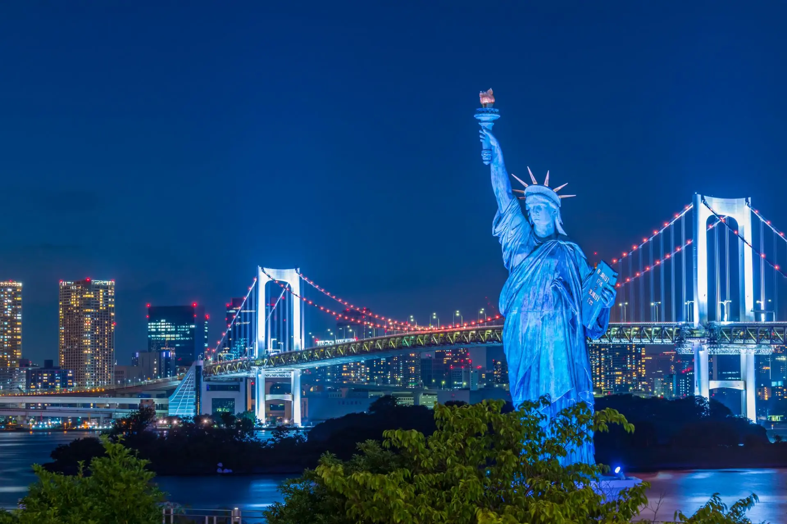
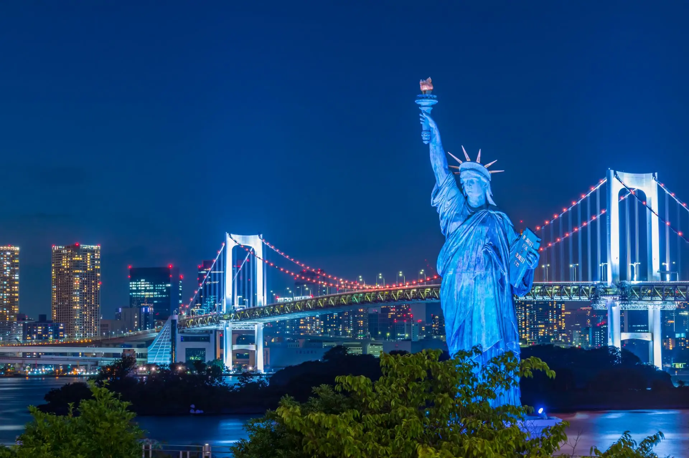

English
English
 日本語
日本語
东京主要旅游景点的交通

根据交通便利性，我制定了一份每天参观景点的计划。请参考。
第1天：上野，秋叶原


上野站曾是东京的中心。这里交通便利，参观景点多，而且购物也很方便。
秋叶原是世界著名的电器街！它也是游戏、动漫和流行文化的中心。
第2天：晴空塔，浅草,台场海滨公园

 

东京晴空塔被吉尼斯世界纪录认定为世界上最高的塔。可以一览关东平原。
浅草是日本最著名的旅游景点之一。在这里可以体验到历史悠久的神社寺庙、日式甜点和美食，是东京最能感受到日本特色的地区。
可以乘船从浅草前往台场海滨公园。这里有能够欣赏美丽夜景的浪漫景点，非常推荐情侣来约会。
第3天：涩谷，原宿，明治神宫


东京的热门购物区“原宿”、“涩谷”和“新宿”，可以说你想要的任何东西都能在这里找到。出JR涩谷站的“八公口”，记得和八公雕像合影。
明治神宫在新年参拜时拥有全日本最多的参拜者人数，这里绿树成荫，给人一种远离都市喧嚣的宁静感。
第4天：池袋，新宿


位于阳光城的“阳光水族馆”是日本首个城市高层水族馆。以“天空绿洲”为概念，这里充满了天空、光线、水和绿色，令人完全忘记自己身处城市中心。
新宿拥有众多高层建筑、商业设施和巨大的娱乐区，是一座繁华的大都市。
第5天：东京站，皇居


东京站于1914年12月开业，是日本的门户。这座美丽的建筑周围融合了高层建筑和自然景观。
皇居是“天皇”的住所，周围有着400多年历史的建筑，一年四季都有精心维护的花卉和自然景观，值得一游。
第6天：丰洲市场，东京塔，银座


老旧的筑地市场曾为东京市民提供食物，于2018年搬迁至丰洲。
东京塔建于1958年，高333米，当时是世界上最高的自立式钢塔，超过了巴黎的埃菲尔铁塔。
第7天：东京迪士尼乐园，东京迪士尼海洋


东京迪士尼乐园以“梦想与魔法的王国”而闻名，是一个距离东京站约15分钟电车的大型主题公园，是带孩子的家庭必去的景点。
东京迪士尼海洋位于东京迪士尼乐园旁边，以海洋故事和传说为主题，带来不一样的体验。
第8天：镰仓

镰仓距离东京约一小时，拥有丰富的海洋和山脉。在这里，神社寺庙与自然和谐共存，可以欣赏到四季的美景。
江之电·镰仓高校前的道口是1990年代热播的高中篮球动漫《灌篮高手》片头场景中的一个地点， 已经成为一个打卡点。